1020B12 CHAIN-DRIVE VALVE GEAR COVER - R.R. AND GASKET REPLACEMENT FOR MODELS WITH AIR-CONDITIONER
- Path
- Procedures > 10 ENGINE UNIT > 1020 CRANKCASE SUMP AND COVERS > 1020B TIMING SYSTEM OIL SEAL COVERS > 1020B12 CHAIN-DRIVE VALVE GEAR COVER - R.R. AND GASKET REPLACEMENT FOR MODELS WITH AIR-CONDITIONER
- Kind
- repair procedure (removal / refitting; the operation number is the code)
- Applies to
- engines: 1.3 JTD 16v; all production periods
- Interactive page
- https://sloeber94.github.io/elrnDB-fPnd/en/#/2752565
Applies to: engines: 1.3 JTD 16v; all production periods
 Removing
Removing
 Refitting
RefittingPosition the vehicle on a lift.
Disconnect the negative battery terminal.
Op. 0010T84 COOLANT FOR AIR CONDITIONING SYSTEM DEHYDRATE AND RECHARGE
1. Disconnect the electrical connection from the air flow meter.
Description | Connector | |
|---|---|---|
1 | Air flow meter | K41 |
2. Loosen the band and disconnect the turbocharger air inlet hose.
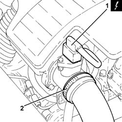
Applies to: engines: 1.3 JTD 16v; all production periods
1. Remove the air filter (1a) complete with air flow meter (1b) releasing it firstly from the pegs underneath and then from the rear fastening.
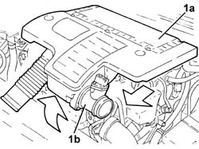
Applies to: engines: 1.3 JTD 16v; all production periods
1. Loosen the band and disconnect the radiator lower coolant outlet hose.
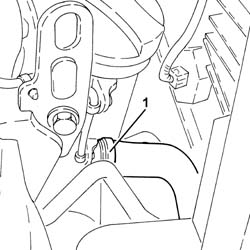
Applies to: engines: 1.3 JTD 16v; all production periods
1. Remove plug (1a) and replace it with tool (1b) on the exhaust side camshaft.
Description | Code | |
|---|---|---|
1b | Template | 1.871.000.900 |
2. Fit a suitable (8 mm diameter) peg via the special opening in the gearbox.
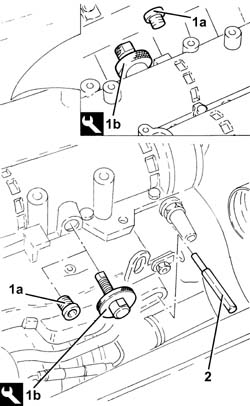
Applies to: engines: 1.3 JTD 16v; all production periods
1. Undo the bolt (1a) and disconnect the pipe from the expansion valve to the compressor (1b).
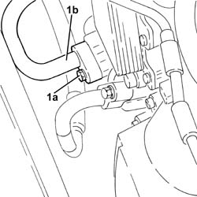
Applies to: engines: 1.3 JTD 16v; all production periods
Op. 1088B10 ENGINE COOLING TANK - R + R
Position a hydraulic lift beneath the coolant sump.
Op. 1008B10 POWER UNIT FRONT MOUNT (TIMING SIDE) FLEXIBLE BLOCK - REPLACE
Op. 1008A47 RIGID POWER-UNIT MOUNT - TIMING SIDE - R R FOR VERSIONS WITH AIR CONDITIONER
1. Fit the tool (1a) complete with mountings (1b).
Description | Code | |
|---|---|---|
1a | Crossmember | 1.870.595.000 |
Description | Code | |
|---|---|---|
1b | Support mountings | 1.870.650.000 |
2. Connect the rod (2a) to the bracket (2b) on the exhaust manifold.
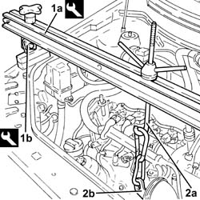
Applies to: engines: 1.3 JTD 16v; all production periods
Remove the hydraulic lift from beneath the crankcase sump.
Op. 4450B04 RIGHT FRONT WHEEL R R
Op. 1092G11 ENGINE COMPONENTS SINGLE DRIVE BELT - R.R. FOR VERSIONS WITH AIR CONDITIONING
Op. 1092A12 CRANKSHAFT PULLEY - R+R FOR VERSIONS WITH AIR CONDITIONER
1. Using the tools (1a) and (1b) for counter-torque, unscrew the left-threaded bolt (1c) fixing the pulley mounting flange to the crankshaft.
Description | Code | |
|---|---|---|
1a | Counter-torque | 1.871.000.200 |
Description | Code | |
|---|---|---|
1b | Support for counter-torque | 1.860.831.000 |
2. Remove the pulley support flange on the crankshaft.
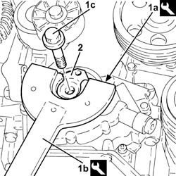
Applies to: engines: 1.3 JTD 16v; all production periods
1. Undo the bolt (1a) and remove the engine components single belt moving tensioner (1b).
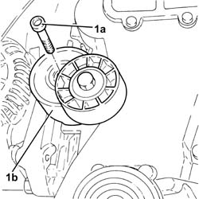
Applies to: engines: 1.3 JTD 16v; all production periods
1. Undo the nuts (1a) and remove the coolant pump (1b) complete with gasket.
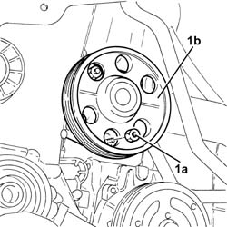
Applies to: engines: 1.3 JTD 16v; all production periods
Op. 2110A60 MANUAL GEARBOX/ENGINE COUPLING BRACKET - R+R
Op. 1020A20 CRANK CASE OIL SUMP - R + R CLEAN SEALS FOR SEALANT APPLICATION
1. Release electrical wiring (1a) from collars (1b).
2. Undo the bolt (2a) and disconnect the connector (2b) for the engine oil vapour recovery pipe from the chain drive timing cover.
3. Unscrew the upper bolts securing the cover for the chain-driven timing system
4. Keep the brackets.
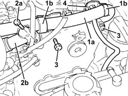
Applies to: engines: 1.3 JTD 16v; all production periods
1. Unscrew bolts (1a) and nuts (1b) securing the cover for the chain-driven timing system.
2. Remove the cover from the chain-driven timing system (2a) complete with engine oil suction head (2b) and engine oil pump.
3. Remove the chain-driven timing system cover gasket.
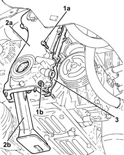
Applies to: engines: 1.3 JTD 16v; all production periods
1. Working at the bench, unscrew bolts (1a) and separate the engine oil intake (1b) with gasket (1c) from the chain-driven timing system cover.
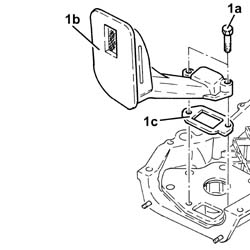
Applies to: engines: 1.3 JTD 16v; all production periods
1. Remove the crankshaft from oil seal from the chain-driven timing system cover.
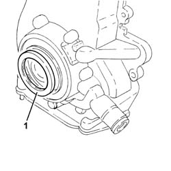
Applies to: engines: 1.3 JTD 16v; all production periods
Refitting
Removing1. Place a new crankshaft front oil seal (1a) in its seat on the chain-driven timing system cover using tool (1b).
Description | Code | |
|---|---|---|
1b | Fitting tool | 1.860.878.000 |
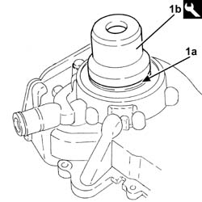
Applies to: engines: 1.3 JTD 16v; all production periods
Fit the engine oil intake chamber with gasket in its seat on the chain-driven timing system cover and secure with bolts.
1. Fit a new gasket for the chain-driven timing system cover.
2. Fit the tool to the chain-driven timing system cover.
Description | Code | |
|---|---|---|
2 | Hose | 1.879.900.600 |
3. Refit the chain-driven timing system cover (3a) with engine oil suction head (3b) and engine oil pump in its seat and then secure provisionally with bolt (3c).
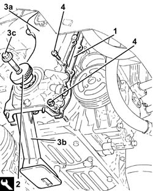
Applies to: engines: 1.3 JTD 16v; all production periods
1. Tighten the bolts fixing the timing cover following the order illustrated.
Value - daNm | Fastening | Component | Ø | |
|---|---|---|---|---|
- | 0.4 (pre-torque) | Bolt | - | M6 |
Value - daNm | Fastening | Component | Ø | |
|---|---|---|---|---|
- | 0.9 | Bolt | - | M6 |
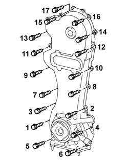
Applies to: engines: 1.3 JTD 16v; all production periods
Connect the connector for the engine oil vapour recovery pipe to the chain-driven timing system cover and tighten the bolts.
Secure the electrical wiring to the collars.
Op. 1020A20 CRANK CASE OIL SUMP - R + R CLEAN SEALS FOR SEALANT APPLICATION
Op. 2110A60 MANUAL GEARBOX/ENGINE COUPLING BRACKET - R+R
1. Place the water pump (1a), complete with gasket in position, then tighten the nuts (1b) to the recommended torque.
Fastening | Component | Ø | Value (daNm) | |
|---|---|---|---|---|
1b | Nut | COOLANT PUMP | M6 | (Engine upper crankcase side) 0.8 - 1.0 |
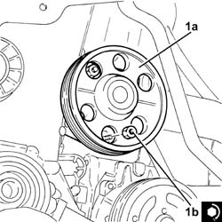
Applies to: engines: 1.3 JTD 16v; all production periods
1. Position the auxiliary drivebelt moving tensioner (1a) in its housing and secure it tightening the bolt (1b) to the recommended torque.
Fastening | Component | Ø | Value (daNm) | |
|---|---|---|---|---|
1b | Bolt | SINGLE BELT MOVING TENSIONER VARIOUS | M10 | (Engine upper crankcase side) 4.5 - 5.5 |
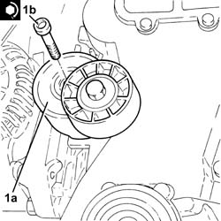
Applies to: engines: 1.3 JTD 16v; all production periods
1. Fit the pulley mounting flange to crankshaft (1a) and tighten the left-threaded bolt (1b) to the specified torque using tools (1c) and (1d) as counter-torque.
Fastening | Component | Ø | Value (daNm) | |
|---|---|---|---|---|
1a | Anticlockwise bolt | PULLEY SUPPORT FLANGE ON CRANKSHAFT | M14 | (Crankshaft side) 21.9 - 24.2 |
Description | Code | |
|---|---|---|
1c | Counter-torque | 1.871.000.200 |
Description | Code | |
|---|---|---|
1d | Support for counter-torque | 1.860.831.000 |
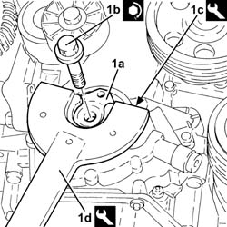
Applies to: engines: 1.3 JTD 16v; all production periods
Op. 1092A12 CRANKSHAFT PULLEY - R+R FOR VERSIONS WITH AIR CONDITIONER
Op. 1092G11 ENGINE COMPONENTS SINGLE DRIVE BELT - R.R. FOR VERSIONS WITH AIR CONDITIONING
Op. 4450B04 RIGHT FRONT WHEEL R R
Position a hydraulic lift beneath the crankcase sump.
Remove the tools used for supporting the power unit safely.
Description | Code | |
|---|---|---|
- | Crossmember | 1.870.595.000 |
Description | Code | |
|---|---|---|
- | Support mountings | 1.870.650.000 |
Op. 1008A47 RIGID POWER-UNIT MOUNT - TIMING SIDE - R R FOR VERSIONS WITH AIR CONDITIONER
Op. 1008B10 POWER UNIT FRONT MOUNT (TIMING SIDE) FLEXIBLE BLOCK - REPLACE
Remove the hydraulic lift from beneath the crankcase sump.
Op. 1088B10 ENGINE COOLING TANK - R + R
1. Connect the pipe from the expansion valve to the compressor (1a) and tighten the bolt (1b) to the recommended torque.
Fastening | Component | Ø | Value (daNm) | |
|---|---|---|---|---|
1b | Nut | EXPANSION VALVE - COMPRESSOR PIPE | M6 | (Compressor side) 0.7 - 1.1 |
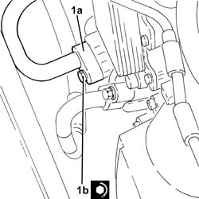
Applies to: engines: 1.3 JTD 16v; all production periods
Remove the peg from the opening in the gearbox.
Remove the camshaft timing tool and tighten the plug.
Description | Code | |
|---|---|---|
- | Template | 1.871.000.900 |
Connect the radiator lower coolant outlet hose and tighten the band.
Fit the air filter with air flow meter in its seat.
Connect the turbocharger air inlet hose and tighten the band.
Connect the electrical connection to the air flow meter.
Description | Connector | |
|---|---|---|
- | Air flow meter | K41 |
Connect the negative battery terminal.
Op. 0010T11 ENGINE OIL CHECK LEVEL AND TOP UP
Op. 0010T20 COOLANT CHECK DENSITY AND TOP UP IF NECESSARY
Op. 0010T84 COOLANT FOR AIR CONDITIONING SYSTEM DEHYDRATE AND RECHARGE
Remove the vehicle from the lift.
Topics linked from this page (11)
- 0010T11 engine oil check level and top up
- 0010T20 coolant change
- 0010T84 coolant for air conditioning system dehydrate and recharge
- 1008A47 rigid power-unit mount - timing side - r r for versions with air conditioner
- 1008B10 power unit front mount (timing side) flexible block - replace
- 1020A20 CRANK CASE OIL SUMP - R + R CLEAN SEALS FOR SEALANT APPLICATION
- 1088B10 engine cooling tank - r + r
- 1092A12 crankshaft pulley - r+r for versions with air conditioner
- 1092G11 Engine components single drive BELT - R.R. for versions with air conditioning
- 2110A60 manual gearbox/engine coupling bracket - r+r
- 4450B04 right front wheel r r
Topics that link to this page (6)
- 1032A12 CHAIN AND GEARS for timing system - R.R. for timing or Replacement.
- 1032B47 toothed drive pulley - r r for versions with air conditioner
- 1032B62 a/c duct pulley - r r
- 1032C40 Timing CHAIN TENSIONER PLATE - R.R.
- 1084B16 engine oil pump - r+r vehicles with a/c
- 1084B26 emgine oil intake duct - r r